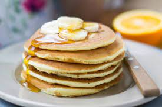

Hot cake proteico para mamastrosos
Ingredientes
- Un scoop de Proteína.
- Un huevo.
- ½ taza de avena.
- Chorrito de escencia de vainilla.
- Polvo para hornear.
- Canela molida.
- Leche(En caso de ser necesario).
- Aceite(De preferencia de oliva).
Procedimiento
- Primero pondremos en la licuadora la avena y la moleremos.
- Después de moler la avena, pondremos en la licuadora todos los demás ingredientes
menos la leche, esta sólo servira por si vemos que la mezcla queda muy espesa, a caso contrario,
si la mezcla queda muy aguada le pondremos un poco más de avena.
- Licuaremos todo hasta que quede la mezcla.
- Vertiremos todo sobre un sarten muy poco aceitado, para que no se nos pegue.
- Voltearemos el hot cake cuando veamos que las burbujas que se forman se vayan rompiendo.
- Quedara listo cuando se vea de forma cafe, no muy oscuro porque si no se quema y no muy claro
porque entonces no se cocio.
Ahora si a ponernos como una bestia mamastrosa ¡Yeah buddy!.
